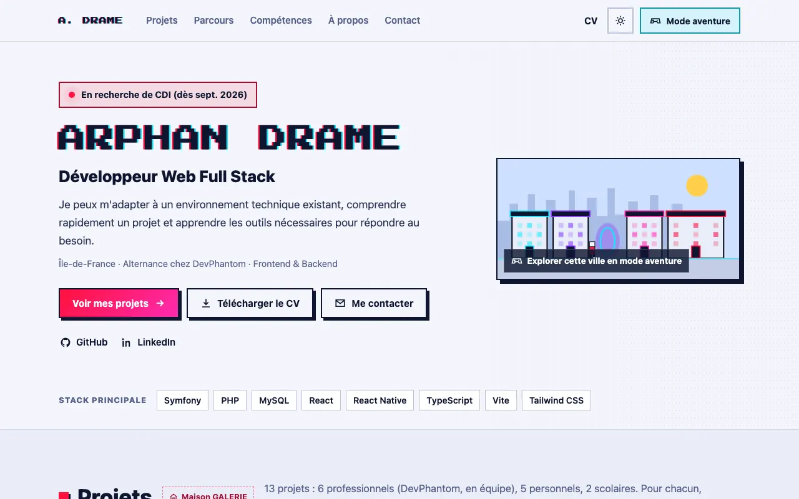
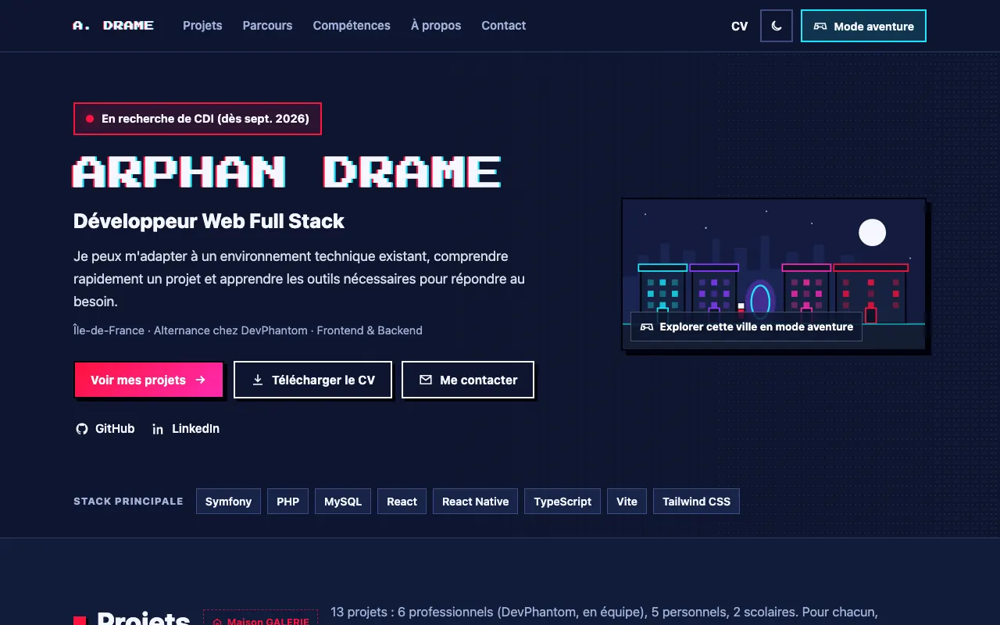
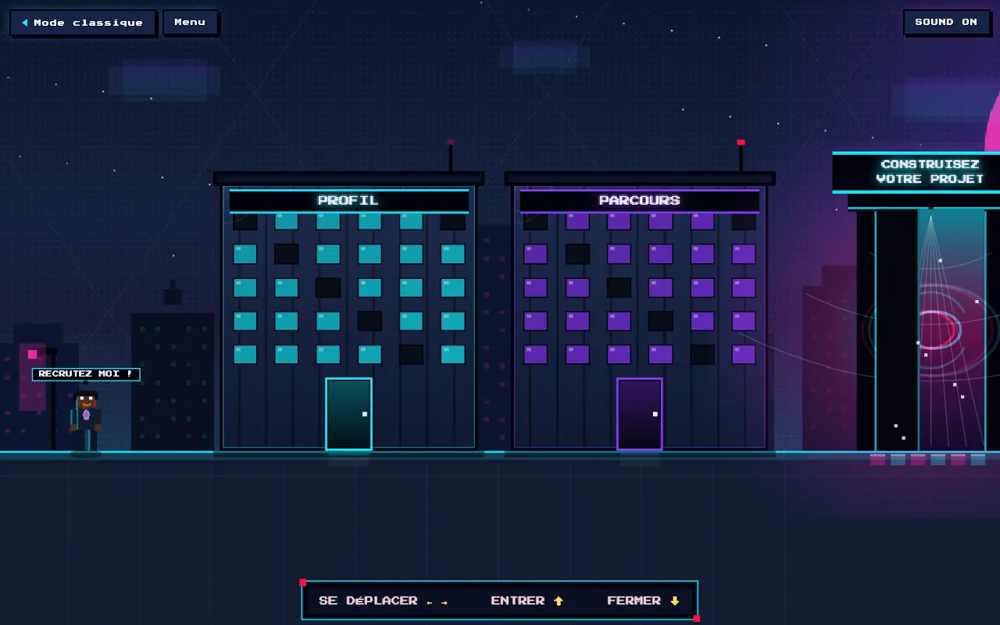

En recherche de CDI (dès sept. 2026)
Arphan Drame
Développeur Web Full Stack · Île-de-France
Comment souhaitez-vous me découvrir ?
-


Mode classique Découvrez mon parcours, mes compétences et mes projets dans une expérience web claire et professionnelle. Découvrir Dernier mode utilisé -

Mode aventure Explorez mon univers interactif et découvrez mon portfolio autrement. Explorer Dernier mode utilisé
Vous pourrez changer de mode à tout moment.